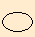
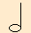
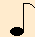
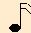


<div id="baterista" class="musico">
    <div class="desarrolloMusico">
        <div>
            
        </div>


        <div>
            <div>
                <input type="number" v-model="value.tempo" />
                <button v-if="!value.tocando" v-on:click="Click_PlayMusico()">
                    <i class="fas fa-play"></i>
                </button>
                <button v-if="value.tocando" v-on:click="Click_PauseMusico()">
                    <i class="fas fa-pause"></i>
                </button>

            </div>
            <div>
                <select>
                    <option>Nueva</option>
                </select>
            </div>
            </div>
            

        <div >
            
            <div class="instrumento" v-for="nota in value.notas">

                <div class="notainstrumento"
                     @mousedown="mousedown_nota(nota)" 
                     @mouseup="mouseup_nota(nota)">{{ nota.numeroNota }}</div>
                <div class="notasinstrumento">
                    <div class="cuartoinstrumento" v-for="(cuarto, cuartoid) in nota.cuartos">
                        <div class="bateristabeat"
                             :class="{ 'sonandocuarto': cuartoid == tocando_cuarto && dieciseisavoid == tocando_16avo }"
                             v-for="(dieciseisavo, dieciseisavoid) in cuarto" 
                             v-on:click="click_beatinstrumento(nota, cuartoid, dieciseisavoid)"
                             @contextmenu.prevent="click_beatinstrumentosecu(nota, cuartoid, dieciseisavoid)"
                             >
                            
                            
                            
                            
                            
                            

                        </div>
                    </div>
                </div>
            </div>
        </div>

    </div>
</div>